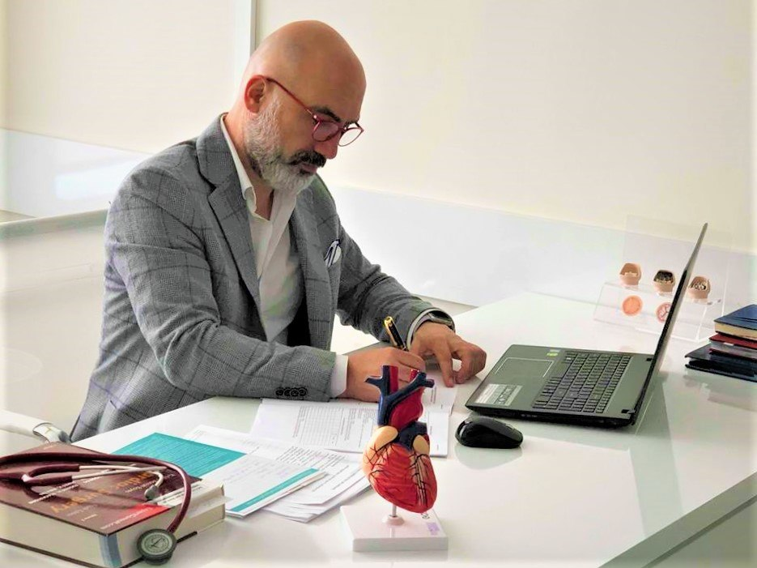
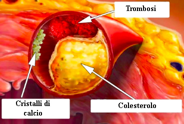
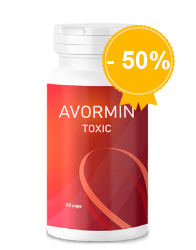

Dopo una tale pulizia dei vasi sanguigni, l’ipertensione ed altre 9 malattie ritenute “incurabili” scompaiono
,
Tutti sanno che la pressione, l’ictus e l’infarto sono una conseguenza dei vasi sanguigni “contaminati” dal colesterolo. Malattie cardiovascolari. In ogni caso, poche persone sanno che è solo la punta dell’iceberg. I vasi sanguigni “sporchi” sono i responsabili di 9 su 10 malattie croniche che sono ritenute incurabili
Emicrania, sbalzi di pressione. Le articolazioni che fanno male e scricchiolano, il collo che non gira e la schiena che non si piega. La sera le gambe sono gonfie, di mattina invece è la faccia ad essere gonfia. C’è un campanello che suona nelle mie orecchie. Le dita si intorpidiscono e le estremità diventano più fredde. La vista si indebolisce. La memoria peggiora. Non per tutto. Molti dicono che è per l’età ma non è così
Perché dai vasi sanguigni dipende il 90% della tua salute?
Da cosa sono inquinati i vasi sanguigni oltre che dal colesterolo?
4 segni chiari e 7 sintomi nascosti di una scarsa circolazione sanguigna
Come pulire in modo sicuro i vasi sanguigni a casa?
A queste domande ha risposto il capo della chirurgia vascolare dell’Ospedale di Perugia. Il professore, neurochirurgo, Dottore Emerito in Italia, Paolo Rossetti.

Perché
Paolo Rossetti ha svolto più di 13 600 operazioni sul cervello aperto. Il suo paziente più giovane aveva solo due giorni
Perché
Paolo Rossetti ha svolto più di 13 600 operazioni sul cervello aperto. Il suo paziente più giovane aveva solo due giorni
Perché
Paolo Rossetti sa come spiegare magistralmente procedimenti medici complessi in parole semplici. Ha redatto 55 noti libri scientifici e guide di studio per persone senza preparazione medica. E’ assolutamente convinto che i nostri vasi sanguigni siano all’origine del 90% della salute del nostro corpo e che il nostro benessere dipenda dalla loro pulizia.
Perché
Perché
Perché dai vasi sanguigni dipende il 90% della tua salute?
Perché
Paolo Rossetti, lei dice continuamente che i vasi sanguigni rappresentano il 90% della salute del corpo? Perché?
Perché
Paolo Rossetti, lei dice continuamente che i vasi sanguigni rappresentano il 90% della salute del corpo? Perché?
Perché
Qual è il più grande organo nel corpo umano? Poche persone lo sanno. Persino gli studenti di medicina spesso si sbagliano. Più spesso si dice il cervello o il fegato. I più eruditi dicono la pelle. Ma invece, il più grande organo è il nostro sistema vascolare.
ed edc
ed edc
Puoi circondare per 2.5 volte
il pianeta con i vasi sanguigni di una persona

Immagina. Se districhiamo tutti i vasi sanguigni del corpo umano e li uniamo in un solo lungo filo, allora la lunghezza di questo filo sarà di circa 100 000 chilometri.
Per essere più chiari - la lunghezza dell’equatore della terra è di 40 000 chilometri. Pare che il “filo” dei vasi sanguigni di una sola persona possa circondare il pianeta per 2.5 volte
Perché
Perché
Ti piace questa proporzione?
Perché
Perché
I vasi sanguigni non sono solo canali attraverso cui scorre il sangue. Si tratta di un organo unico e complesso, in cui, se c’è un problema, immediatamente viene fuori un dolore;
rf e
rf e
Cattiva circolazione sanguigna alle gambe – vene varicose, edema persistente e costante pesantezza delle gambe, congelamento o viceversa - un’insopportabile sensazione di bruciore ai piedi. Crepe sui talloni. Cattiva circolazione sanguigna - non c’è protezione contro i batteri, e quindi i funghi. Le unghie diventano ruvide e crescono;
Perché
Perché
I vasi sanguigni ostruiti che nutrono il fegato – epatite. Sapore amaro in bocca. Hai mangiato grassi - hai un gusto amaro;
Perché
Perché
I vasi sanguigni deboli e pieni nelle articolazioni – le cartilagini si prosciugano. Le articolazioni scricchiolano e fanno male, vengono fuori l’osteocondrosi e le ernie;
Perché
Perché
I vasi sanguigni del retto hanno perso la loro tonalità - le emorroidi sbocciano con i coni viola;
Perché
Perché
I vasi oculari – la vista cala, diventa ondulata, volano le mosche. Si sviluppa la cataratta. Il rossore agli occhi, che spesso attribuiamo alla stanchezza, è in realtà una microemorragia - lacrime dei capillari oculari più piccoli;
Perché
Perché
La circolazione cerebrale è difficile – arrivano i capogiri, l’acufene e le dimenticanze. Sarà successo anche a te, di arrivare in cucina e di dimenticare subito perché sei arrivato in cucina. O di avere una parola di uso comune sulla punta della lingua, senza poterla ricordare. Sono tutti segni di un deterioramento dello stato dei vasi sanguigni del cervello;
Perché
Perché
E ovviamente, la regina della cattiva circolazione, Sua Maestà l'Ipertensione. E l'ipertensione è la madre degli ictus e la sorella dell’infarto
I vasi sanguigni nutrono il nostro sistema, la vita stessa circola attraverso questi vasi. Se si blocca un’importante sezione sulla strada, la vita si ferma.
Perché
Perché
I vasi sanguigni "ostruiti" - la carestia per tutti gli organi.
Perché
Perché
L’eccesso di peso, per un attimo, è strettamente connesso ai vasi sanguigni. I vasi ostruiti dal colesterolo mettono gli organi a digiuno, i vasi sanguigni non possono portare le corrette quantità di nutrienti agli altri organi. Per questo, il cervello manda dei segnali - devi mangiare. E l’uomo mangia. Ma agli organi manca comunque il nutrimento a causa dei vasi sporchi. Il cervello manda nuovamente il segnale - devi mangiare. E quindi siamo in un circolo vizioso.
Perché
Perché
E da qui la voglia costante di masticare qualcosa, con una voglia incredibile di cibi dolci e grassi - il corpo vuole calorie.
Perché
Perché
Quando i miei colleghi dicono ai loro pazienti: "Ha l’ipertensione a causa del sovrappeso." Confondono la causa e l’effetto. Non c’è ipertensione a causa del sovrappeso. E il sovrappeso a causa dell’ipertensione
Perché
Perché
Il noto proverbio “E’ impossibile essere felici se non c’è la salute” può essere completato - “E la salute è impossibile senza avere vasi sanguigni puliti”
Per questo, non mi stancherò mai di ripeterlo: se vuoi vivere una vita piena - pulisci e cura i vasi. Dei vasi sanguigni puliti sono la chiave per sbarazzarsi del 90% delle malattie croniche, alcune delle quali sono considerate "incurabili".
Da cos’altro sono inquinati i vasi sanguigni oltre che dal colesterolo?
Tutti sappiamo che il colesterolo è il male. E’ lui che blocca i nostri vasi sanguigni, restringe il flusso e interrompe la circolazione del sangue. Ma è solo lui il colpevole?

6,7 kg
la massa totale di agenti contaminanti che si accumulano nei vasi entro i 50 anni di età
COLESTEROLO
Si, hai ragione. Le placche di colesterolo, che sono anche chiamate “placche aterosclerotiche,” sono responsabili di circa il 65-70% dell’inquinamento vascolare.
Entro i 50 anni di età, nei vasi sanguigni umani si accumulano fino a 5 kg di placche di colesterolo. I depositi di colesterolo restringono il lume vascolare di 4-5 volte.
Immagina. Se il lume normale del vaso è come il tuo dito, allora 5 kg di placche di colesterolo riducono il lume alla taglia di 4 centimetri.
Le placche di colesterolo da sole non sono una minaccia per la vita. Certo, la qualità della vita peggiora, aumentano la pressione sanguigna, le emicranie e i dolori articolari, così come la stanchezza e l’apatia. La trombosi, che pure si accumula nei nostri vasi, è molto più pericolosa.
BLOCCO PESI
I coaguli di sangue si accumulano in modo significativo per “soli” 800 grammi - 1 kg. Ma il vero pericolo è che sono instabili. In ogni momento, un coagulo di sangue può staccarsi e viaggiare attraverso i vasi sanguigni in cerca di una vittima.
Se il coagulo è abbastanza largo, allora chiude strettamente il vaso vittima. Arriva l’ischemia - una cessazione completa dell’afflusso di sangue verso l’organo che si nutre grazie a questo vaso.
L’ictus ischemico - blocco del vaso del cervello. L’infarto - un blocco dell’arteria cardiaca. Ischemia del fegato, collasso del polmone, insufficienza renale. Le emorroidi non sono altro che un’ischemia dei vasi del retto. Il blocco di anche piccoli vasi delle gambe, nel tempo, portano alla necrosi - cancrena.
FOSFATO DI CALCIO
Il calcare nei vasi è il residuo dei medicinali chimici e degli additivi alimentari. Si accumulano di 300-400 grammi fino ai 50 anni di età. La maggior parte del calcare si accumula nei vasi del cervello.
Il pericolo del fosfato di calcio è che ha una struttura affilata e cristallina. Con un forte restringimento - uno spasmo del vaso causato dallo stress o dall’esercizio fisico o dal tempo, un cristallo tagliente di calcio può perforare il vaso e causarne la rottura. E una rottura di un vaso cerebrale significa un ictus emorragico
4 segni chiari e 7 sintomi nascosti di una scarsa circolazione sanguigna
Quali sono i sintomi che indicano che i miei vasi sono ostruiti dallo “sporco”? Come capire che il corpo ci sta gridando, "Pulisci presto i vasi sanguigni!"
Francamente, se hai più di 45 anni e non hai mai preso nutraceutici per pulire i tuoi vasi sanguigni, ti garantisco che hai qualche problema con i vasi.
45 anni di età
quella linea dopo la quale è necessario pulire i vasi
L’ostruzione vascolare con il colesterolo, i coaguli di sangue, la calcificazione è essenzialmente un processo naturale dell’invecchiamento. Certo, il cibo moderno, le medicine, il fumo e l’alcool accelerano questo processo “letteralmente” di 5-8 volte. Ma siamo tutti esseri umani e non si può girarci attorno nel mondo in cui viviamo.
I sintomi principali dei vasi spazzatura
Se hai una diagnosi di ipertensione - allora puoi anche non ascoltare. L’ipertensione è la regina della cattiva circolazione sanguigna
Soffri di sbalzi di pressione? La pressione è costantemente alta e sei obbligato a prendere medicine? Quindi, solo il 30% dei vasi sanguigni è ancora libero, Dio ci perdoni. Il resto è densamente coperto dalle placche di colesterolo, dai coaguli di sangue e dal calcio
Per questo, il minimo stress, un cambiamento del tempo, le tempeste magnetiche influiscono immediatamente sul benessere di una persona. La pressione sale, la testa comincia a martellare come un martello, le articolazioni girano.
Quattro malattie causate da una cattiva circolazione sanguigna:
-
1. Ipertensione
Una pressione instabile o costantemente alta, che deve essere abbassata dai medicinali. L’indicatore più importante. C’è una diagnosi di ipertensione? In questo caso i vasi semplicemente gridano "Puliscici!"
Rossetti
-
2. Vene varicose
Brutte vene sporgenti sulle gambe, pesantezza, dolore e gonfiore. Il colesterolo sporco e i coaguli di sangue fanno “inceppare” le valvole venose. Appaiono gradualmente le “stelle” vascolari, che si trasformano poi in una “rete” vascolare. E la rete si sta già sviluppando a tutti gli effetti in vene varicose
Paolo
-
3. Emorroidi
Quando i vasi del retto che drenano il sangue si ostruiscono, i noduli emorroidali si gonfiano. Se i vasi che forniscono il sangue sono i primi ad ostruirsi, si creano le ragadi anali.
Paolo
-
4. Osteocondrosi
C’è una mancanza di circolazione nelle cartilagini. Le cartilagini si induriscono e cominciano ad usurarsi, dato che non hanno il tempo di ristabilirsi. Non circolano e si seccano. Perdono la capacità di ammortizzare delicatamente. I sali non vengono evacuati e cominciano a crescere senza controllo, creando una gobba dei “vedovi”.
Paolo
7 sintomi nascosti:
-
1. Edema
I vasi sporchi non hanno tempo di pompare il liquido. Metabolismo elettrolitico disturbato. Entro sera, le gambe si gonfiano tanto che i calzini scavano nelle caviglie, lasciando i segni. E’ impossibile levare gli anelli dalle dita. Un addome gonfio parla di edema degli organi interni.
Paolo
-
2. Acufene
Da un cigolio difficilmente udibile fino ad un urlo alto che interferisce con la concentrazione. E’ una conseguenza di un aumento della tensione dei vasi del cervello, che crea pressione sul timpano.
Paolo
-
3. Capogiro.
La sensazione di essere ubriachi, improvvisi capogiri indicano che il tuo apparato vestibolare “muore di fame”. Spesso, anche l’udito soffre.
Paolo
-
4. Insonnia
Ti senti stanco e assonnato, e poi vai a letto a mezzanotte e non riesci a dormire? Questo è causato da una mancanza di afflusso sanguigno alla ghiandola pituitaria. Essa cessa di produrre la melatonina - l’ormone del sonno.
e f ec
-
5. Affaticamento
Non hai assolutamente forze, non vuoi fare nulla. Vuoi solo stare a riposo e mangiare. Questa sensazione peggiora a causa del fatto che il corpo va in modalità risparmio di energie. Gli organi non ricevono i nutrienti appropriati a causa dei vasi sporchi e per non morire, il tuo corpo mira a ridurre al minimo le attività.
fe ed
-
6. Anomalie visive
Le "mosche" davanti agli occhi, le onde, l’offuscamento e la foschia negli occhi. Sono sintomi di un debole vascolare oculare.
Paolo
-
7. Dolori articolari
A causa del tempo - le articolazioni fanno male. Quando ti svegli la mattina non ti senti sveglio e riposato, ma intorpidito, come una persona disabile semi paralizzata. Ci vuole un po’ per iniziare a camminare e per impastare le articolazioni che sono rigide dopo il sonno. Si perdono le proprietà del liquido sinoviale, le articolazioni sono incollate tra di loro come una pasta.
rvfe e d
C’è almeno un sintomo? I vasi stanno disperatamente suonando l’allarme, chiedendo pulizia e cibo.
Più spesso, le persone hanno numerosi sintomi in uno in varie combinazioni. E poi tutti nello stesso momento.
Le persone sfortunate provano a curare ogni malattia individualmente. Pasticche per la pressione, unguenti per le vene varicose, supposte per le emorroidi, gel per l’osteocondrosi. E ovviamente antidolorifici, antidolorifici, antidolorifici.
Hanno semplicemente buttato soldi in farmacia. Perché la causa di tutte queste malattie è la stessa - l’ostruzione vascolare. Ed è necessario iniziare da qui, con la pulizia generale dei vasi.
Come pulire i vasi sanguigni dal colesterolo, dai coaguli di sangue e dal calcare?
Diamo un consiglio medico specifico, con il caso di Emilia Colli da Ragusa. 57 anni, sposata, sovrappeso, ipertensione e vene varicose. Reagisce al tempo con la precisione di un barometro - ripara le articolazioni, vince la stanchezza e la sonnolenza, e riduce il mal di testa.
Come aiutare Emilia Colli? Come pulire i suoi vasi senza doversi inginocchiare davanti ai medici e ascoltare frasi moraliste come "Dovresti perdere peso", "Dovresti fare sport", “Dovresti mangiare bene”, "E’ una questione di età" e così via?
La maggior parte delle preparazioni farmaceutiche non curano né guariscono, ma danneggiano e paralizzano
Si, purtroppo la medicina nelle nostre regioni zoppica su tutte e due le gambe. Per questo, capisco assolutamente la riluttanza ad andare dal medico. Ma Emilia Colli starà bene da sola.
Per una pulizia sicura dei vasi sanguigni, posso parlare di un solo rimedio dalla reputazione impeccabile - Avormin. Allunga la vita di 11-17 anni, riempiendola di energia e agilità, e non a costo di un tormento e perdendo ogni vitalità.
Sicuro, come una tisana. Ed è secondo per efficacia solo alla pulizia chirurgica dei vasi sanguigni. Ma diversamente dalla chirurgia, non ha complicazioni né effetti collaterali. Il prodotto pulisce tutti i vasi del corpo. Dalle grandi arterie spesse fino ai più piccoli teneri capillari.
Avormin si compone di pillole naturali al 100% preparate con estratti di piante che a contatto con l’acqua risvegliano le molecole vive. Questi bei pulitori spazzano via il muco del colesterolo dai vasi, i coaguli di sangue che aderiscono alle mura - coaguli di sangue, placche di calcio - i residui dei medicinali. Tutto quello che interferisce con il flusso libero del sangue.
Lo sporco che si è accumulato negli anni, imprigionando la tua vita, viene lavato via grazie ad una somministrazione regolare di pillole di Avormin per 1 mese e mezzo o 2 mesi.
In un mese e mezzo, Avormin scioglie e rimuove 4 kg di placche di colesterolo. Dissolve 900 grammi - 1 kg di trombosi e filtra 350-400 grammi di calcare
I mal di testa si dissolvono, l’acufene sparisce. Il cervello, ricevendo il giusto nutrimento grazie ai vasi puliti, lavora alla velocità di un supercomputer. I pensieri sono chiari e precisi
Le sensazioni sono acuite, senti suoni piacevoli, di cui prima non ti importava. L’udito migliora, puoi addirittura distinguere una conversazione tranquilla nella stanza vicina
Gli odori hanno nuovi colori. La congestione nasale, il naso che cola cronicamente, le allergie vanno via. I bronchi si allargano. La respirazione è costante e libera. L’aria fresca, che riempie i polmoni, si diffonde nel corpo con onde piacevoli, causando una sensazione di leggera euforia
I gusti diventano luminosi e pieni. Il cibo abituale dà un piacere inabituale. Mangi meno e meglio. Scompare quella voglia improvvisa di grassi e zuccheri
Le articolazioni cantano “grazie” all’unisono, non avendo più dolore. Lo scricchiolio scompare completamente, al suo posto ci sono movimenti lenti, grazie al miglioramento della lubrificazione delle articolazioni. E’ come un motore a cui viene cambiato l’olio, il liquido nero e sporco di metalli viene sostituito con olio nuovo e chiaro, che permette uno scivolamento perfetto
Impressionante. Sinceramente, è la prima volta che sento parlare del Avormin
La nostra Emilia Colli, dopo aver probabilmente provato centinaia di diversi mezzi e medicine, decise di darci un taglio con tutto questo e promise di non buttare più soldi in dubbie soluzioni miracolose
Lasciatemi raccontare una storia istruttiva sulla diffidenza
Nel 1929, fu inventato il primo antibiotico, la penicillina, che curava facilmente la dissenteria e il tifo, di cui al tempo le persone morivano inevitabilmente.
Ma la maggior parte della gente non credeva che l’antibiotico potesse aiutare, perché avevano già fatto 100 vani tentativi per guarire. Quelli che erano stati delusi 100 volte e che non ebbero paura di provare per la 101 esima volta furono curati. E quelli che si arresero, che fecero ciao ciao con la mano dicendo questa frase "Un altro rimedio miracolo che non farà nulla", morirono, mentre la salvezza era proprio lì di fronte a loro
I nostri dubbi sono traditori, ci fanno perdere tanto di quello che potremo ottenere, senza la paura di provare la novità.
La penicillina sconfisse contemporaneamente le malattie prevalenti a quel tempo: dissenteria, tifo, e peste polmonare. Quindi, nel tempo, Avormin eliminerà le malattie vascolari. I primi passi sono già stati intrapresi - Giappone, Canada, Corea, Svizzera ed Israele - hanno sistemato legislativamente la pulizia dei vasi sanguigni con preparati naturali.
In Italia, Avormin viene prescritto ufficialmente solo in un posto - nell’ospedale di Roma. Nel vero luogo in cui la "crème della società" viene curata - ministri, deputati, celebrità ed altre elite. Li curano secondo il protocollo israeliano, e le istruzioni del nostro Ministero della Salute non danno loro un decreto. Per questo, i pazienti ricevono un risultato, non un processo senza fine.
Il Ministero della Salute permette che il resto dei cittadini vengano curati con la chimica, che viene prodotta dalle industrie che appartengono a questa stessa elite.
Anche io credo che il dubbio sia il nostro peggior nemico, quindi ho paura di provare cose nuove.
Immaginiamo, compro Avormin, ne apro un pacco, estrarre una capsula, prendi un bicchiere d’acqua. Che succede dopo? Come funziona il medicinale?
Una volta in acqua, è attivo un vero laboratorio naturale. La polvere reagisce con l'acqua e il processo di ossigenazione degli estratti naturali che compongono Avormin.
Quando saturi di umidità e ossigeno, gli estratti curativi acquisiscono l’effetto del perossido di idrogeno - ossigenazione.
Le molecole del Avormin sono piccole bombole di ossigeno. Esse fanno esplodere i blocchi di colesterolo nei tuoi vasi sanguigni e liberano il passaggio del sangue.
In occidente, Avormin è stato soprannominato il “Pulitore di Vasi”. Questo nome riflette accuratamente la sua essenza.
L’effetto del perossido (ossigenazione) - l’accelerazione dell’assorbimento delle molecole terapeutiche arricchendole con l’ossigeno.
Dopo 5 minuti inizia l'azione della capsula, tanto vivono le molecole degli estratti vivi, tenute sveglie dalla reazione di ossigenazione. Per questo Avormin è così efficace - bevi degli estratti vivi che funzionano attivamente. Mentre i medicinali danno solo scheletri molecolari passivi sterilizzati.
La composizione della polvere consente di assorbire istantaneamente le molecole viventi. Gli estratti arricchiti con ossigeno vengono facilmente assorbiti dalle pareti dell'esofago. Pertanto, Avormin non provoca bruciore di stomaco, amarezza in bocca o rutti, non irrita gli intestini e protegge invece lo stomaco. Anche le persone con un'ulcera possono tranquillamente bere Avormin.
PULISCE LE MURA
L’ortica pulisce i blocchi dovuti al colesterolo. Le molecole di alcune sostanze mandano via le particelle di colesterolo che aderiscono alle mura dei vasi sanguigni. Il passaggio per il flusso sanguigno è liberato. Le autorità possono infine cominciare a "bere." Le cartilagini rinascono, piene di umidità ed ossigeno, innescano il meccanismo dell’autocura. Recuperano la flessibilità. Gli scricchiolii e gli scatti nel collo, nella schiena e nelle articolazioni scompaiono. Niente più dolori e intorpidimento al ginocchio e alle dita con il brutto tempo.
Avormin è un tesoro di rari estratti curativi che lavorano armoniosamente per la pulizia e la forza dei vasi sanguigni.
Niente più edema. Anche dopo essere stati in piedi tutto il giorno - i piedi non si gonfiano.
L’afflusso di sangue alla pelle è recuperato - la rete vascolare e le stelle scompaiono. Le vene varicose si riducono gradualmente, i nodi emorroidali si asciugano.
SI TRASFORMA IN ENERGIA
Le molecole dell’ estratto di biancospino entrano in azione. Esse prendono le particelle “sospese” del colesterolo e, mescolandosi ad esse, si trasformano in utili lipoproteine ad alta densità, che hanno un ruolo importante nella riduzione dei grassi.
Avormin colpisce due piccioni con una fava - rimuove lo sporco del colesterolo dai vasi e stimola un’appropriata perdita di peso. Per questo, si avverte una potente fonte di energia, vuoi muoverti, i tuoi occhi brillano, hai la voglia e il desiderio di scalare le montagne.
RIDUCE GLI SPASMI
La Vitamina B2 riduce gli spasmi vascolari. E’ come una “valeriana” per i vasi sanguigni. Essa calma e rilassa i vasi sanguigni che sono compressi da un debole flusso sanguigno. La pressione in modo lento e sicuro torna alla normalità. Il mal di testa scompare, l’acufene si riduce, i polmoni e i bronchi lavorano facilmente e armoniosamente. Nessun mancamento d’aria.
SCARICA IL CUORE
La tiamina allo stesso tempo perlustra i vasi alla ricerca di coaguli di sangue. Il larice diluisce il sangue, lo rende leggero e fluido. Dissolve i coaguli di sangue ed anche i piccoli aneurismi. Elimina i depositi di calcare nei vasi lasciati dai medicinali chimici.
Come se un sacco di cemento fosse rimosso dal cuore, si respira in modo rilassato. Il ritmo cardiaco diventa lento e misurato. Non ci sono più l’aritmia e la tachicardia. Il tagliente formicolio al petto causato dalla congestione del cuore viene dimenticato per sempre.
Il rischio di un infarto diventa zero.
RIPARA I VASI
L’estratto della corteccia di salice ripara simultaneamente le mura dei vasi sanguigni. Le microfessure, che causano probabilmente la rottura del vaso, vengono curate dalle molecole della corteccia di salice che agisce come un cerotto. Il cervello è ben protetto dall’ictus. Le sue cellule ricevono nutrimento e ossigeno, conferendo una gradevole sensazione di testa leggera.
Effetto farfalla
Avormin è come il battito di ali d'una farfalla che innesca una reazione a catena di un cambiamento strabiliante. A cominciare dalla pulizia del muschio che si è accumulato per decenni nei vasi, piano piano, Avormin avvia una reazione a catena per curare il corpo
Basta prendere il Avormin per 2 mesi e si sperimenta una rinascita
SVEGLIA FACILE
Ti svegli di giorno e ti alzi facilmente dal letto - non hai bisogno di forzarti ad alzarti, facendo fare stretching e strofinando le tue gambe tese, la tua schiena e il tuo collo.
Al mattino, il corpo è pieno di energia e forza, perché i vasi sono completamente puliti e di notte tutti gli organi ricevono i corretti nutrienti e il riposo necessario. Non c’è nemmeno una piccola parte del corpo che manca di sangue, e questo permette di recuperare le forze per il nuovo giorno.
GUSTOSA COLAZIONE
A colazione, mangi un sandwich con uno strato spesso di burro e dei croccanti crackling rosati - ed il fegato e lo stomaco li sopportano. Niente più eruttazione amara, né dolore forte all’addome. Avormin ha pulito i vasi che nutrono lo stomaco che ora può digerire un’unghia.
ENORME POTENZA
Quando esci di casa, non devi più preoccuparti per le gambe - non cammini come un peso, puoi addirittura camminare per tutto il giorno, e le tue gambe non sono stanche e non si gonfiano. I sandali, le scarpe, i calzini non stringono gambe gonfie come dei salsicciotti.
TRANQUILLITÀ ASSOLUTA
Sei assolutamente calmo e rilassato. Non c’è più quel dolore continuo che ti distrugge l’animo, impedendoti di concentrarti su qualsiasi cosa. Quando niente fa male, le cose, i suoni e gli odori familiari assumono colori nuovi, dimenticati per molto tempo.
PERFORMANCE ECCELSA
Anche dopo una dura giornata di lavoro, arrivi a casa con la testa fresca. Il cervello funziona come un orologio svizzero, non ti senti per niente stanco.
SOGNI D’ORO
E una volta a letto, ti addormenti rapidamente e dolcemente. Sono finiti i giorni in cui ti rigiravi nel letto a mezzanotte, girando più volte il cuscino, e il sonno non arrivava mai. Adesso tutto è semplice - controlli quando dormire e il corpo esegue ubbidientemente il tuo ordine.
Deficit e programma preferenziale.
Avormin, da quello che sappiamo, è scomparso dalla maggior parte delle farmacie. Perché?
Purtroppo si. Dall’inizio dell’anno, Avormin non è più disponibile nelle farmacie.
La ragione del conflitto è stata l'avidità delle case farmaceutiche, che volevano che il produttore del Avormin pagasse loro 90 euro per ogni unità venduta! Rovinando il già cospicuo margine sul prezzo del produttore (il costo di Avormin in alcune farmacie di Roma ha raggiunto i 240 euro), i farmacisti volevano aggiungere una tassa aggiuntiva al produttore.
I membri della farmacia sono alla ricerca di scuse - dicono che a causa del costo aggiuntivo sono riusciti a sopravvivere. Alla fine, Avormin è un medicinale che viene acquistato ogni 8-10 anni. Inoltre, dopo aver pulito le lattine con questa polvere, una persona non ha più bisogno di prendere la medicina che ha preso ogni giorno! Le persone hanno rifiutato di prendere medicine per la pressione sanguigna e hanno smesso di comprare medicine per dolori articolari. Il consumo di farmaci per plasma e diabete è significativamente ridotto. E questo porta a grandi perdite per le farmacie. Per fare ciò, chiedono il prezzo più alto possibile per Avormin
Di conseguenza, il produttore di Avormin ha rescisso i contratti con tutte le farmacie e ha deciso di distribuire il prodotto solo tramite il web. Il principio è giusto. Giudicate voi stessi: non dovete pagare l’affitto del luogo commerciale, e le tangenti alle farmacie non sono necessarie per avere il prodotto. Per questo, Avormin è ora disponibile, ad un’offerta speciale.
Il programma preferenziale "Pulisci vasi"
rfiok fek

rfiok fek
Il nostro istituto, insieme al Centro Nazionale di Ricerca Medica per la Chirurgia Cardiovascolare, la posta e il produttore di Avormin, ha lanciato un programma preferenziale come parte di un progetto per la medicina su Internet.
Tutti coloro che lo desiderano possono iscriversi per avere Avormin
Cosa bisogna fare per accedere al programma?
Per poter acquistare Avormin devi soddisfare le condizioni:
Termini e condizioni per Avormin:
-
Solo per uso personale
Questa procedura è necessaria per combattere contro i rivenditori che stanno tentando di acquistare in quantità massicce il Avormin per rivenderlo con il loro margine di profitto.
feck cdekl
-
Iscriviti attraverso il formulario ufficiale del programma
Il formulario di iscrizione ufficiale è una garanzia di qualità e protezione contro i rivenditori.
dcwcj
Quanto durerà il programma preferenziale?
Fino al 23.03.2020 incluso, o fino a che il lotto di questo Avormin finisce. E questo a discapito del fatto che non viene fatta pubblicità in TV e in radio. Le persone si passano l’informazione, lo consigliano ad amici e parenti. Anche per noi è stato sorprendente vedere che l’informazione sul prodotto si diffondesse così velocemente.
Perciò, ti raccomando di effettuare la richiesta il prima possibile. Le pillole distribuite ripetutamente, quest’anno non sarà uguale.
Al 23.03.2020, il resto del lotto è:
11
pezzi

Formulario d’iscrizione ufficiale
No.29401 del 03.2020
Per ricevere Avormin sotto il programma preferenziale.
78 EUR 39 EUR
Per ricevere “Avormin” compila con il tuo Nome e il Numero di telefono nei campi qui sotto e clicca su 'FORMULARIO D’ISCRIZIONE'
Thank you! Your submission has been received!
Oops! Something went wrong while submitting the form.
*I tuoi dati sono inviati direttamente al produttore. Nessuno al di fuori di lui ha accesso a tali dati.